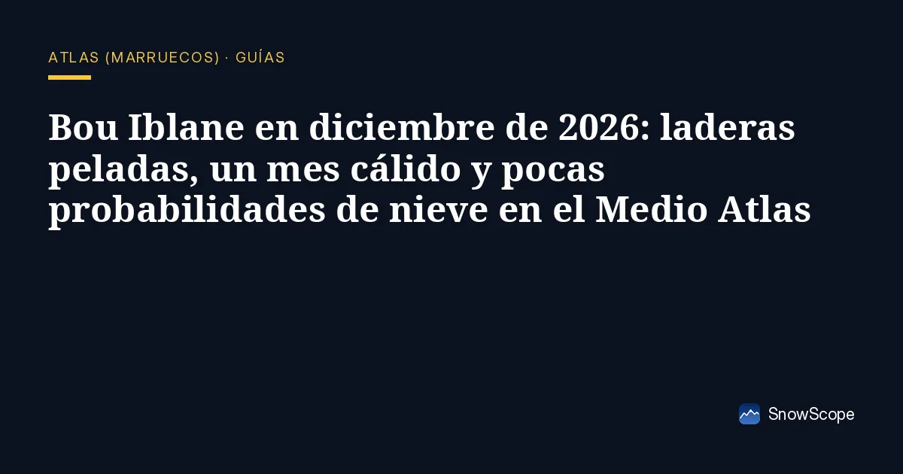

Bou Iblane en diciembre de 2026: laderas peladas, un mes cálido y pocas probabilidades de nieve en el Medio Atlas
Bou Iblane el 10 de noviembre no muestra nieve en su cresta elevada ni en los picos circundantes del Medio Atlas oriental. El pronóstico de diciembre es decididamente cálido e inclina las probabilidades de nieve hacia abajo: donde estas montañas suelen recibir nieve invernal, este año la probabilidad de más que lo normal es solo del 30 al 39 por ciento.
Consulta la previsión de nieve en tiempo real de Bou Iblane en la app SnowScopeEspesor de nieve, alertas de nieve polvo y mapa 3D, gratis.

El macizo desnudo hoy
Camina por las tierras altas alrededor de Bou Iblane y encontrarás roca desnuda y pedregal. El mapa de SnowScope del 10 de noviembre no muestra nada blanco en absoluto dentro de 60 km de la cumbre a 2700 m. Mostramos el terreno en su lugar: la larga cresta de Bou Iblane en sí, y al este la masa separada de Bou Naceur. Estas son las cumbres donde la nieve invernal arraiga primero cuando llega la estación.
En noviembre el Medio Atlas sigue cálido y seco. Las 13 celdas de cuadrícula montañosa de la región todas se inclinan hacia menos nieve que los diciembres pasados, y ninguna muestra una señal de inclinación hacia más. Esta tendencia está impulsada por el calor, no por una atmósfera seca.
Lo que diciembre suele traer
En lo alto de Bou Iblane cerca de 2700 m, un diciembre típico deposita 23 cm de nieve nueva. Para el 31 de diciembre, solo quedan 5 cm en el suelo. El sol y los períodos cálidos entre tormentas derriten la mayor parte. Estas son montañas secas donde la nieve no se acumula a menos que el frío persista o caiga polvo fresco diariamente.
El rango de diciembres menos nevados a más nevados en el pasado es amplio: una cuarta parte de los inviernos pasados acabaron sin nieve, mientras que una cuarta parte tuvo 11 cm o más. El pronóstico de este año estrecha ese rango hacia abajo. Las probabilidades de terminar diciembre más profundo que los típicos 5 cm son solo del 30 por ciento.

El calor es el factor principal
Los 51 pronósticos del centro meteorológico europeo se ponen fuertemente de acuerdo en un punto: diciembre será cálido. El 96 por ciento de ellos predicen temperaturas por encima de lo normal, con un calentamiento promedio de 2,3 grados Celsius en todo el Medio Atlas. Un acuerdo tan amplio sobre el calor es raro.
En precipitación los pronósticos se dividen: el 41 por ciento es más húmedo que lo usual, el 59 por ciento es más seco. En promedio predicen 2 por ciento más lluvia y nieve que los 42 mm típicos de un diciembre, un pequeño excedente. Sin embargo, en estas montañas, la temperatura importa más que la precipitación total. La nieve responde a ambas: sigue la precipitación de cerca (correlación 0,86), pero el calor aleja la nieve (correlación -0,38). Unos pocos grados de calor extra convierten la nieve que cae en lluvia en las laderas más bajas y aceleran el deshielo en las más altas.


Qué diciembres pasados coinciden con este patrón
El sistema estacional encuentra sus coincidencias históricas más cercanas en diciembre de 2022, diciembre de 2010 y diciembre de 2002. Estos tres inviernos compartieron masas de aire cálido y nieve escasa sobre el Atlas. Ninguno ofreció una buena base de nieve para final de mes.
Sin embargo, la historia también muestra una cláusula de escape: una única tormenta atlántica poderosa puede invertir el cuadro en días. Cuando el aire frío y la precipitación organizada se alinean, Bou Iblane y sus cumbres vecinas se vuelven blancas rápidamente. Tales tormentas son poco comunes en diciembre pero no imposibles. El pronóstico mensual es una inclinación de la probabilidad, no un pronóstico grabado en piedra.

Dónde buscar cuando llega la nieve
Si diciembre trae un evento de nieve, la cresta alta de Bou Iblane lo atrapará primero, especialmente en laderas orientadas al norte por encima de 2700 m. Estos aspectos retienen la nieve más tiempo porque el sol invernal permanece bajo y débil. Las laderas orientadas al sur pierden su capa rápidamente una vez que comienza un deshielo.
La diferencia entre un mes desnudo y una sorpresa nevada a menudo se reduce a una o dos semanas a principios de diciembre. Vigila el pronóstico de 7 días de cerca. Cuando los meteorólogos anuncian un sistema frío y húmedo del noroeste, ese es el momento para planificar tu ascenso. Entre tales sistemas, espera deshielo y retroceso.
Consejos para esquiadores
- Planifica caminatas en Bou Iblane usando el pronóstico de 7 días, no el pronóstico mensual. La orientación semanal te dice cuándo está cayendo nieve realmente.
- Después de cualquier tormenta de diciembre, dirígete a laderas orientadas al norte y crestas por encima de 2700 m donde la nieve persiste más tiempo bajo el fuerte sol invernal.
- Consulta el mapa de SnowScope antes de partir. En un diciembre cálido, la nieve en estas laderas altas a menudo se derrite en tres a cinco días.
- Lleva agua extra y protección solar: incluso cuando hay nieve fresca en terreno elevado, el sol de diciembre a 2700 m es brillante y el aire es seco.
- Si planeas un recorrido invernal por la cresta, comienza a principios de diciembre y vigila los pronósticos diariamente. Un mes cálido y desnudo puede volverse blanco de la noche a la mañana cuando llegan las tormentas atlánticas.
Sobre estas cifras
Los espesores de nieve de las estaciones son la nieve más profunda en las pistas altas en la fecha indicada; son estimaciones para una zona, no una medida en un punto. Las previsiones pueden cambiar. Consulta siempre el boletín oficial de aludes antes de salir fuera de pista.
Citar este informe
Para investigación, docencia o prensa: cifras y gráficos reutilizables libremente bajo CC BY 4.0 con esta cita.
SnowScope (2026), Bou Iblane en diciembre de 2026: laderas peladas, un mes cálido y pocas probabilidades de nieve en el Medio Atlas, https://snowscope.app/blog/es/2026/11/bou-iblane-december-2026-snow-outlook.html, consultado el 2026-11-10
SnowScope (Atlas Labs). (2026, November 10). Bou Iblane en diciembre de 2026: laderas peladas, un mes cálido y pocas probabilidades de nieve en el Medio Atlas. SnowScope snow reports. https://snowscope.app/blog/es/2026/11/bou-iblane-december-2026-snow-outlook.html
BibTeX
@misc{snowscope2026bouiblanedecember2026sno,
author = {{SnowScope (Atlas Labs)}},
title = {Bou Iblane en diciembre de 2026: laderas peladas, un mes cálido y pocas probabilidades de nieve en el Medio Atlas},
year = {2026},
month = nov,
howpublished = {\url{https://snowscope.app/blog/es/2026/11/bou-iblane-december-2026-snow-outlook.html}},
note = {Published 2026-11-10 10:48 UTC; accessed 2026-11-10}
}· CC BY 4.0 · Métodos, datos y herramientas →
Sigue Bou Iblane
Gratis: un aviso cuando llega la nieve y la previsión cada mañana.